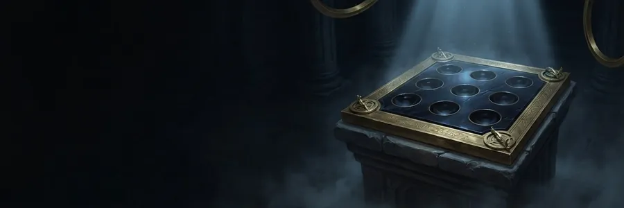
Les Duels des Sceaux
Pose tes cartes sur le plateau et retourne celles de l’adversaire.
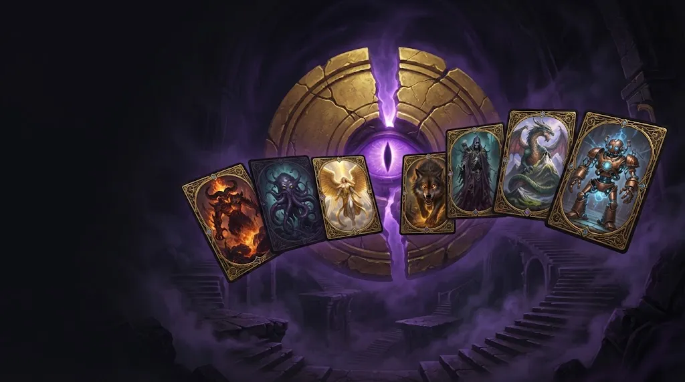
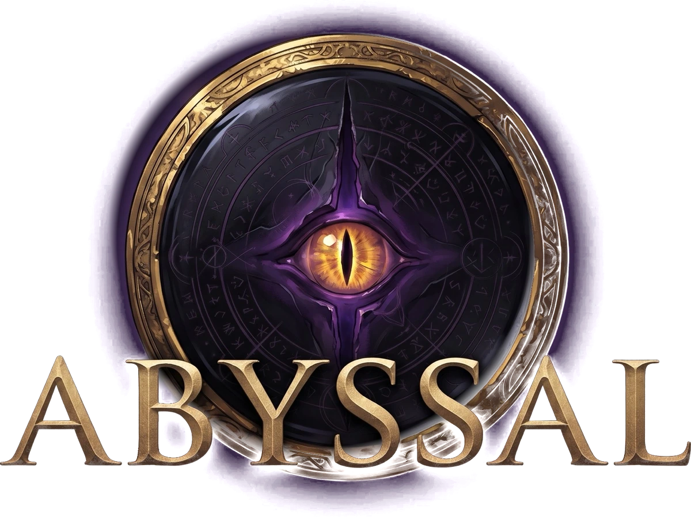
Un jeu de cartes à collectionner dark fantasy. Ouvre des boosters, rassemble plus de 500 créatures tirées des mythes et descends dans l’Abysse, étage après étage.
La collection
Démons, anges déchus, dieux oubliés, dragons primordiaux, automates et spectres : chaque créature a son illustration, son histoire et son rôle au combat.
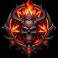
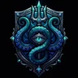
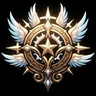
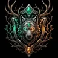
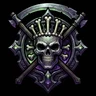
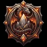
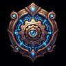
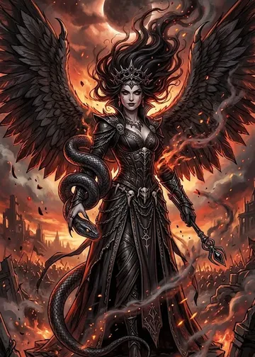
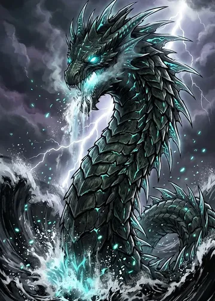
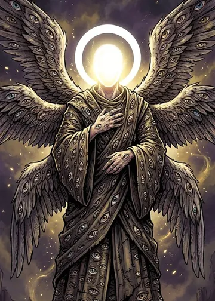
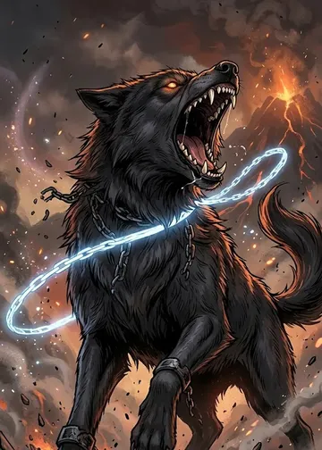
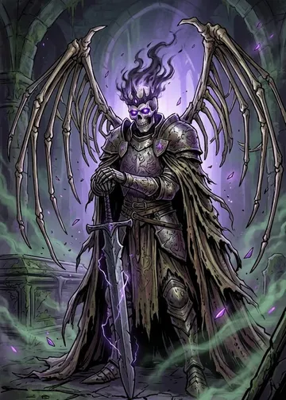
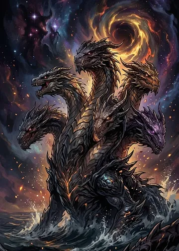
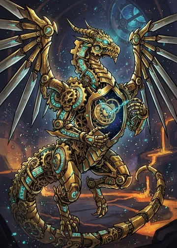
La Descente
Le Bestiaire interdit a été déchiré, et ses pages sont tombées dans l’Abysse. Toi seul sais encore lire les sceaux : descends chapitre après chapitre pour les refermer. Chaque chapitre est gardé par un rêve de l’Abysse, un gardien unique avec ses règles et sa Furie.
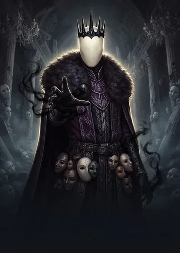
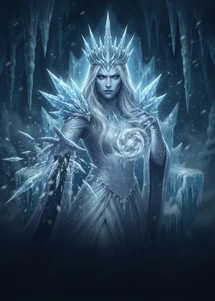
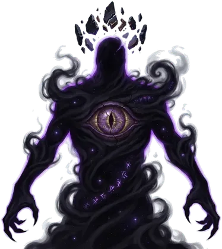
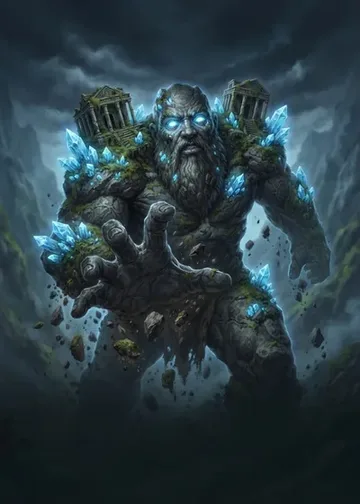
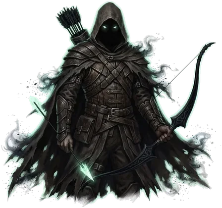
Le Cercle de l’Abysse
Huit adversaires par jeu, un défi chaque jour, des salles aux règles différentes.

Pose tes cartes sur le plateau et retourne celles de l’adversaire.
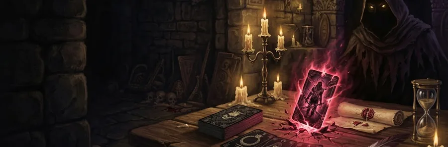
Tire des cartes et additionne… sans jamais tirer deux fois le même royaume.
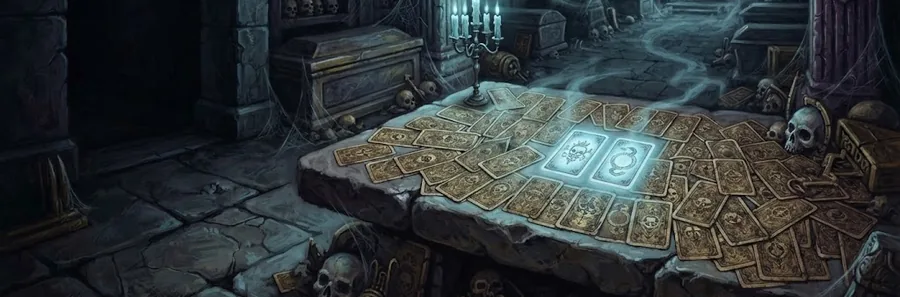
Un duel de mémoire : chaque paire trouvée réveille le pouvoir de son royaume.
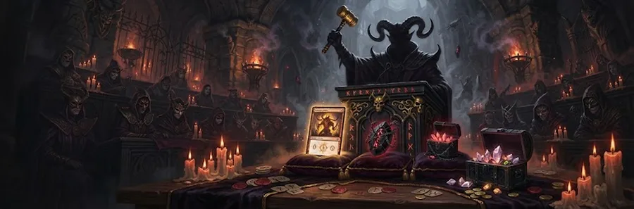
Des offrandes secrètes, des créatures à gagner, des malédictions à éviter.
En ligne
Les Duels des Sceaux, le Pacte et les Enchères se jouent aussi contre de vrais joueurs ; les Cryptes, entre amis.
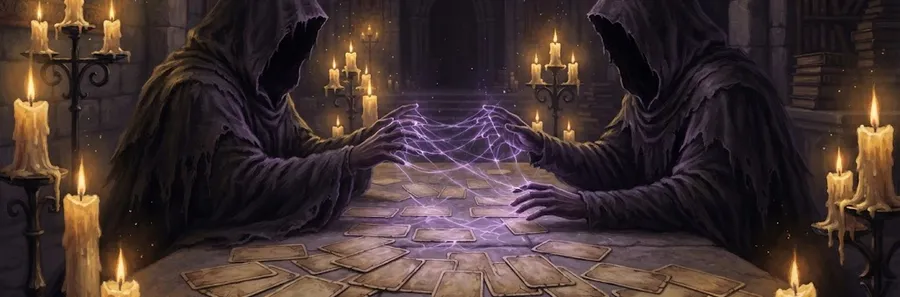
Chaque jour
Un booster gratuit, trois Épreuves du jour (les mêmes pour tous), des missions, une offrande et des coffres à ouvrir.
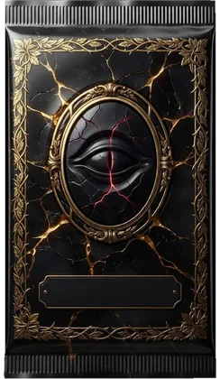
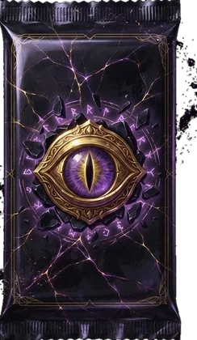
Bientôt
Pour soutenir le jeu, une boutique uniquement d’apparence : cadres de profil vivants, dos de cartes animés, sachets de booster, plaques de pseudo, tapis de jeu, fonds de profil et réactions pour tes parties en ligne.
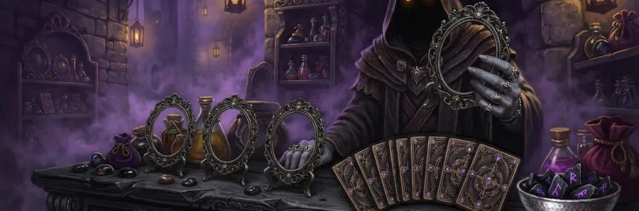
Le jeu en images
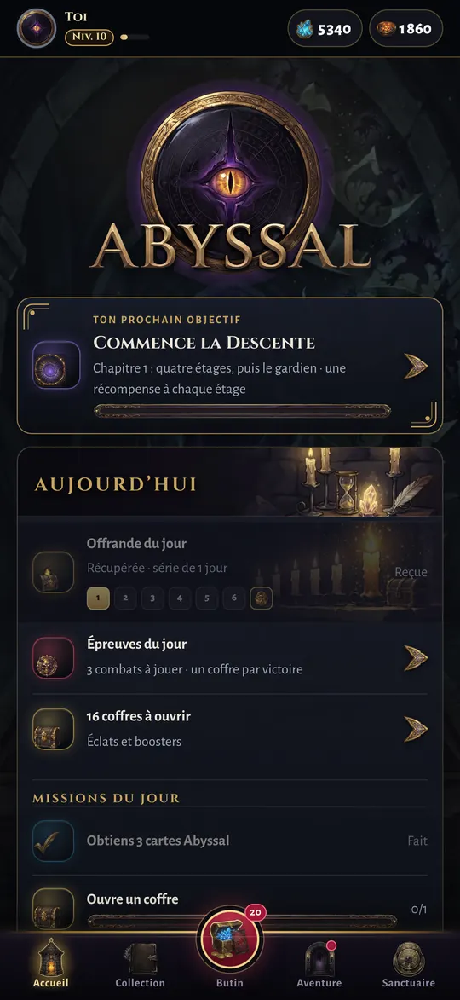
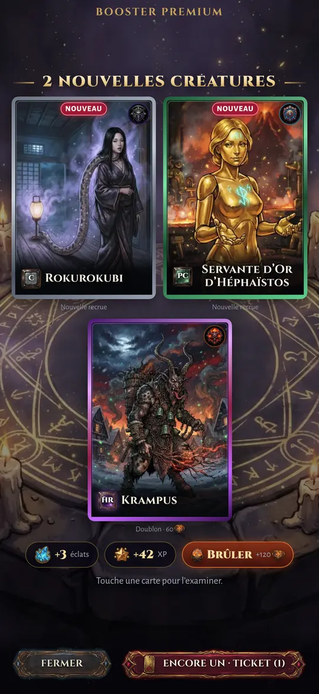
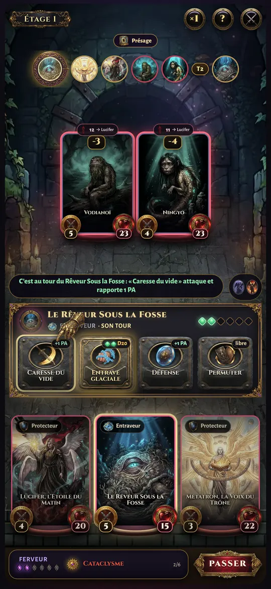
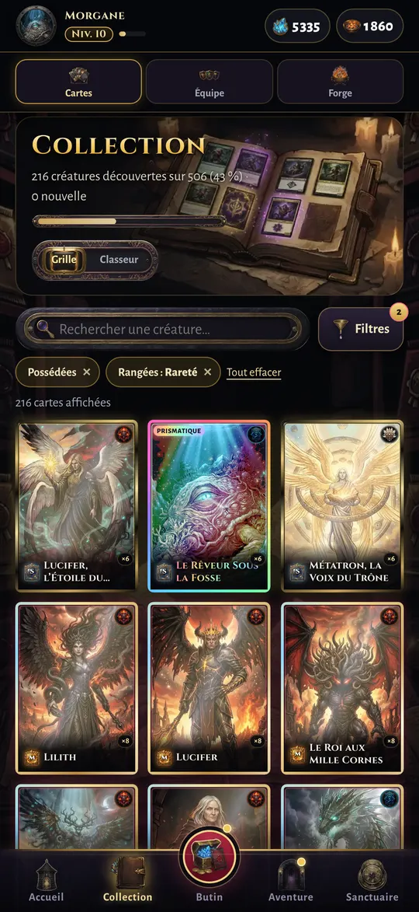
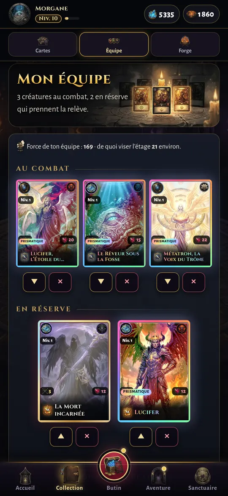
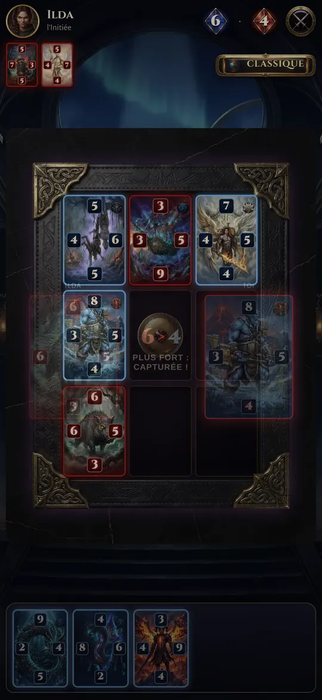
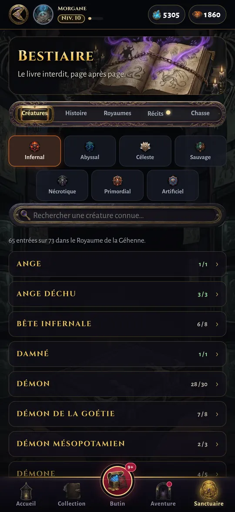
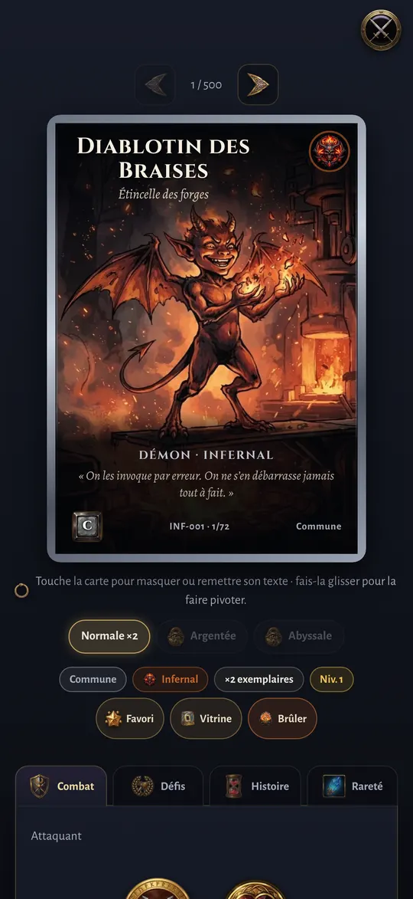
Une question ? Consulte l’Aide ou écris-nous à contact@abyssal-game.fr.